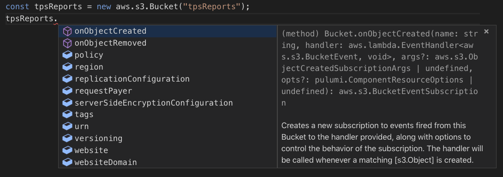
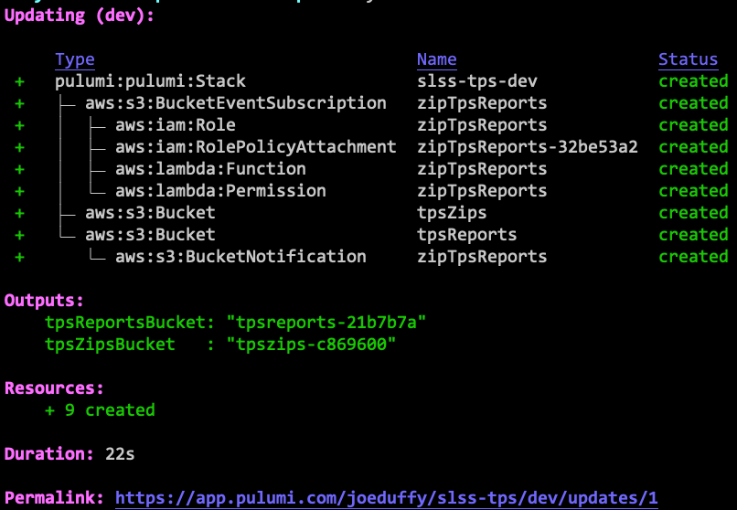
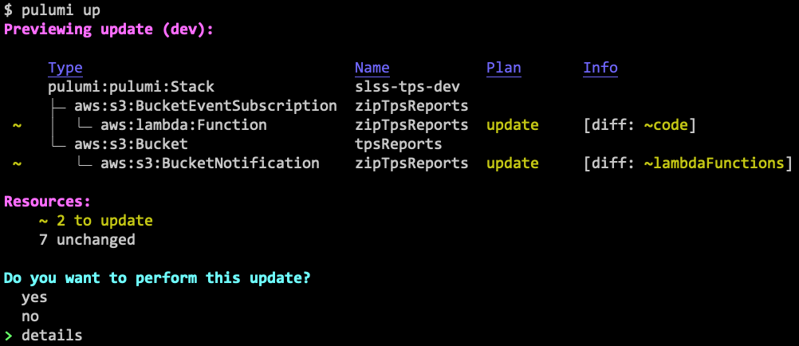
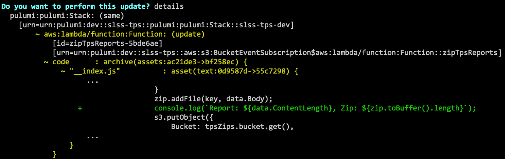

Easy Serverless Apps and Infrastructure — Real Events, Real Code

With Pulumi, you can create, deploy, and manage any cloud resource using your favorite language. This includes application- *and* infrastructure- related resources, often in the same program.
One area this gets really fun is serverless. Because we’re using general purpose languages, we can create resources, and then wire up event handlers, just like normal event-driven programming. This is the way serverless should be!
In this article, we’ll see how. There’s a broad range of options depending on what you want to do, and how your team likes to operate. We’ll be using AWS and TypeScript, but other clouds and languages are available.
A Simple Serverless App
In this article, we’ll use a very simple serverless app. We have two S3 buckets: one for TPS reports, and the other to store archived zipfiles of those reports. Anytime a new report comes in, our Lambda will zip and archive it.
Simple enough. This can be visualized as follows:

All source code for this example is available on GitHub.
Event Sources and Event Handlers
Serverless app models today make you think of the event sources – the
S3 buckets – and event handlers – the Lambdas and associated code
– as very different things – “infrastructure” versus “app code”
– managed with distinct tools and workflows. Pulumi, in contrast,
gives you a single CLI, pulumi, to manage everything consistently.
You can create event sources and handlers in the same program, but Pulumi’s approach is flexible, allowing you to ease into serverless without boiling the ocean. You can choose to wire functions up to existing resources (say, if your team already created the buckets), or even use functions your team has already made.
Also, because Pulumi provisions and manages resources, updating your
functions after creating them is easy. Just edit your code,
run pulumi up, and Pulumi will diff and compute the minimal set of
changes it can make to upgrade your code – no downtime required.
We’ll see this in action shortly. But first let’s create our initial
app.
Creating an Event Handler
There are multiple approaches to creating a function. Let’s start with the easiest.
Approach 1: Magic Functions
Our favorite way to create functions is to write them inline. This blurs the line between infrastructure and application logic in a way that makes Pulumi programs feel like real, first class distributed apps.
First, we have our TPS reports and zips buckets (for now
we’ll new them up, more on that later):
import * as aws from "@pulumi/aws";
const tpsReports = new aws.s3.Bucket("tpsReports");
const tpsZips = new aws.s3.Bucket("tpsZips");The bucket objects have many properties, including obvious ones like the
ARN, domain name, CORS rules, and so on. But if we look closely, we’ll
see there are some onX methods. These register event handlers:

Let’s use onObjectCreated to create a Lambda that will zip up any new
reports:
tpsReports.onObjectCreated("zipTpsReports", (e) => {
const AdmZip = require("adm-zip");
const s3 = new aws.sdk.S3();
for (const rec of e.Records || []) {
const zip = new AdmZip();
const [ buck, key ] = [ rec.s3.bucket.name, rec.s3.object.key ];
console.log(`Zipping ${buck}/${key} into ${tpsZips.bucket.get()}/${key}.zip`);
const data = await s3.getObject({ Bucket: buck, Key: key }).promise);
zip.addFile(key, data.Body);
await s3.putObject({
Bucket: tpsZips.bucket.get(),
Key: `${key}.zip`,
Body: zip.toBuffer(),
}).promise();
}
});Most of the code here is the application logic – precisely what we want to be focusing on! In fact, this code looks just like any ordinary JavaScript event-driven program.
A neat thing that Pulumi can do is capture references to other
resources. So, notice here, we actually capture a reference
to tpsZips from within the event handler, and Pulumi figures out how
to serialize the resulting closure. For the most part, any code you
write there will work, unlocking all sorts of powerful composition
scenarios: multiple functions can be composed together, you can use
modules as usual, and so on. Just program like you normally would,
without the awkward environment variables and configuration. That’s why
we call these magic functions.
Now, let’s deploy the resources to AWS:

After confirming, yes, everything is up and running after just a few
seconds:

Note the resource graph. Pulumi uses real languages, which allows
encapsulation and hiding of unnecessary complexity. So underneath that
simple-looking onObjectCreated are many AWS resources, like IAM
attachments. This is a lot like how we can ignore all the messy OS API
calls when using Node.js abstractions.
Pulumi has many convenience functions built-in, and one of them
is pulumi logs, which will let us tail the logs associated with all
compute in our stack (including serverless functions):
$ pulumi logs -f Collecting logs for stack dev since 2019-03-10T10:09:56.000-07:00…
Now that we’re tailing the logs, let’s copy a file over using the AWS CLI:
$ aws s3 cp ./tps001.txt s3://$(pulumi stack output tpsReportsBucket) upload: ../tps001.txt to s3://tpsreports-96458ef/tps001.txt
We have used the pulumi stack output command to conveniently fetch the
bucket name. After the upload completes, we’ll see that our function
comes alive in the pulumi logs command:
2019-03-10T11:10:48.617-07:00[zipTpsReports] Zipping tpsreports-96458ef/tps001.txt into tpszips-edfde11/tps001.txt.zip
And, sure enough, if we list the contents of the zip bucket, we will see our newly added file:
$ aws s3 ls s3://$(pulumi stack output tpsZipsBucket) 2019-03-10 11:10:50 6206 tps001.txt.zip
Voila! A fully functioning serverless application.
Note also that the CallbackFunction class – the powerful abstraction
behind all of this – is exported, and offers some knobs,
in case you want to do things like reuse existing IAM roles rather than
creating new ones.
See the pulumi/aws/lambda documentation for details.
For instance, say we want to increase the RAM available to our function from 128MB to 256MB:
tpsReports.onObjectCreated(
"zipTpsReports",
new aws.lambda.CallbackFunction("zipTpsReportsFunc", {
memorySize: 256 /*MB*/,
callback: (e) => { /* same code as before */ },
},
);Soon we’ll see how to manage and update our functions, but first let’s see some alternative coding styles.
Approach 2: Manual Function Resources
We just saw that we can write our application logic inside of our Pulumi program, alongside our infrastructure resource definitions. This can feel magical and super productive. But not everybody wants to mix these together. Sometimes you want to stick to the classic way of doing this: keeping your function’s application logic in one place, and your function’s infrastructure definition in another. This aligns more closely with many team workflows.
There is another practical reason to want this: if your functions are written in one language (say, C# or Java) while your Pulumi infrastructure is authored in a different one (say, JavaScript or Python).
Pulumi supports this, by simply defining your Lambda function like any other infrastructure resource:
// First, create some IAM machinery:
const zipFuncRole = new aws.iam.Role("zipTpsReportsFuncRole", {
assumeRolePolicy: {
Version: "2012-10-17",
Statement: [{
Action: "sts:AssumeRole",
Principal: {
Service: "lambda.amazonaws.com",
},
Effect: "Allow",
Sid: "",
}],
},
});
new aws.iam.RolePolicyAttachment("zipTpsReportsFuncRoleAttach", {
role: zipFuncRole,
policyArn: aws.iam.AWSLambdaFullAccess,
});
// Next, create the Lambda function itself:
const zipFunc = new aws.lambda.Function("zipTpsReportsFunc", {
environment: {
variables: {
"TPS_ZIP_BUCKET": tpsZips.bucket,
},
},
code: new pulumi.asset.AssetArchive({
".": new pulumi.asset.FileArchive("./app"),
}),
runtime: "nodejs8.10",
role: zipFuncRole.arn,
});
// Finally, register the Lambda to fire when a new TPS report arrives:
tpsReports.onObjectCreated("zipTpsReports", zipFunc);Because we’re taking matters into our own hands, we have to create the IAM machinery ourselves. We also need a way to communicate the zip bucket name, so we use an environment variable. This highlights both the benefits and drawbacks to programming at this level – we need to know how to configure all of these ancillary resources, but as a result, the entire power of Lambda is at our fingertips.
Notice that we’ve pointed to our application logic inside of ./app.
Pulumi will create the zipfile for you. If we instead wanted to use a
zipfile we’ve already packaged, just change code as follows:
// ...
code: new pulumi.asset.FileArchive("./app.zip"),
// ...Using Pulumi’s
Asset and Archive classes,
we can fetch code from anywhere – even the network.
Although managing your functions manually isn’t quite as magical, it is practically useful, and still delivers all the usual infrastructure as code benefits, enabling robust infrastructure management and versioning.
Approach 3: Wire Up an Existing Function
This post is mainly about using serverless functions with Pulumi. But what if you’re using Pulumi mainly for infrastructure, and another solution for the functions themselves? No problem – Pulumi can still glue everything together, even if it’s not provisioning all of the resources.
Every resource type in Pulumi has a static get that looks up an
existing resource. These resources aren’t managed by Pulumi, but you
can still access their properties and use them. In this case, we’ll
just look up an existing Lambda, zipTpsReportsFunc, and register it as
an event handler:
const zipFunc = aws.lambda.Function.get("zipTpsReportsFunc", "zipTpsReports-19d51dc");
tpsReports.onObjectCreated("zipTpsReports", zipFunc);We’ve given the function’s ID, zipTpsReports-19d51dc, which allows
Pulumi to locate it in your account and reuse it. This can make it easy
to incrementally adopt Pulumi one piece at a time, collaborate between
teams, or stitch together resources
managed by different stacks.
More About Functions
Now that we’ve seen the basics, let’s look at a few associated function management topics.
Updating a Function
Updating the function is as easy as can be. Imagine we’re running into
a problem and want to do some good old fashioned printf debugging
inside of our lambda. Maybe we want to log the size of the report and
its resulting zipfile. Just add the relevant line:
// ...
zip.addFile(key, data.Body);
console.log(`Report: ${data.ContentLength}, Zip: ${zip.toBuffer().length}`);
s3.putObject(
// ...And run pulumi up – it will show us what changed:

We can view the full diff, by choosing details, including a Git-like
diff of the code changes themselves!

After selecting yes, the function is updated in just a couple of
seconds. Similarly, we can update any of the resource definitions, and
Pulumi will figure out how to incrementally update them.
Splitting Up your Codebase
A nice middle ground between magic and manual functions is to use your language’s module system to structure code differently. This is similar to how you might structure a typical application: route definitions over here, business logic over there, markup over here, etc. Pulumi can figure out the diffs regardless of how you’ve structured your code, so updates are always based only on what’s changed.
For example, maybe we’ve defined our callback function in ./app:
export async function zipReport(e: aws.s3.BucketEvent): Promise<void> {
// app code, as shown above, goes here
}And now we can go back to our infrastructure code, and eliminate the application logic entirely:
import { zipReport } from "./app";
...
tpsReports.onObjectCreated("zipTpsReports", zipReport);We can take this further and use dynamic package management to split up the code, possibly even spreading pieces of infrastructure and application code across multiple repos and/or packages. This works well for larger teams with independent components versioning at their own pace.
Lastly, it’s possible to use Pulumi stacks to actually break apart your cloud resources and functions into independently deployable pieces. This allows teams to leverage features like RBAC. For instance, it’s common for the DevOps team to manage the physical cloud resources like queues, topics, and buckets, while the development team authors and manages the serverless functions attached to them. Read more about this here.
More About Event Sources
We glossed over one of the more interesting points: what resources have event handlers associated with them, and how to get our hands on them.
Provision a New Resource
The simplest answer here is to create a new resource in your Pulumi
program using new, as we saw above. Because Pulumi is an
infrastructure as code platform, any resources in any cloud are
available –
AWS,
Azure,
GCP,
Kubernetes, etc. When
you new one up, Pulumi understands how to provision and manage it.
We saw simple examples of this earlier:
const tpsReports = new aws.s3.Bucket("tpsReports");Note that the full set of configuration options are available on each resource. Let’s say we want to turn on server-side encryption of our TPS archive bucket:
const tpsReports = new aws.s3.Bucket("tpsReports", {
serverSideEncryptionConfiguration: {
sseAlgorithm: "AES256",
},
});Just as with functions, subsequent updates will be diffed and updated in the minimally impactful way.
Connect to an Existing Resource
Although it’s nice we can provision the event sources and targets in a single program, sometimes different members of the team manage different parts of the infrastructure. For example, maybe your DevOps engineers provision resources like buckets, topics, and so on, and your developers wire up the functions.
Not to worry, you can import an existing resource and program against it in the same way:
const tpsReports = aws.s3.Bucket.get("tpsReports", "arn:aws:s3:::tpsReports-4f64efc");This time, when you run your Pulumi program, you’ll still see this
resource but notice it says read instead of create or update. This
just means that the resource is read from your account as-is. No matter
what you do, the bucket itself will not be modified by Pulumi, other
than to subscribe an event.
This, of course, can be combined with the earlier similar functionality for functions, to glue together a bucket and a Lambda, where neither was actually provisioned by Pulumi!
const tpsReports = aws.s3.Bucket.get("tpsReports", "arn:aws:s3:::tpsReports-4f64efc");
const zipFunc = aws.lambda.Function.get("zipTpsReportsFunc", "zipTpsReports-19d51dc");
tpsReports.onObjectCreated("zipTpsReports", zipFunc);Other Notable Event Sources
Finally, it’s worth noting there are many event handler functions exposed in the AWS package:
apigateway.x.API: create serverless APIs using an Express.js stylecloudwatch.onSchedule: fire a CloudWatch event on a particular schedule, e.g. a cron expressioncloudwatch.Event.onEvent: fire an event when a particular CloudWatch event occurscloudwatch.LogGroup.onEvent: fire an event when a CloudWatch logs event occursdynamodb.Table.onEvent: fire events for DynamoDB insert, modify, or remove operationskinesis.Stream.onEvent: fire Kinesis Stream events at particular times or batch sizess3.Bucket.onObjectCreated: trigger a function anytime an object is created in an S3 Buckets3.Bucket.onObjectRemoved: trigger a function anytime an object is removed from an S3 Buckets3.Bucket.onEvent: trigger a function for a wide range of S3 Bucket eventssns.Topic.onEvent: fire SNS Topic events when new messages arrivesqs.Queue.onEvent: fire SQS Queue events when new messages are enqueued (or on DLQ events, etc)
All of these handlers can be programmed using the spectrum of techniques outlined above.
In Conclusion
In this post, we saw many different options for serverless programming with Pulumi, from magic functions that make serverless feel like true event-driven programming, to provisioning and managing infrastructure as code.
We also saw that all of these options can be combined in any way, depending on you and your team’s needs. This is the magic of programming languages in action!
If you’d like to try it out, check out the code for this post on GitHub. Happy serverless hacking!
Posted on